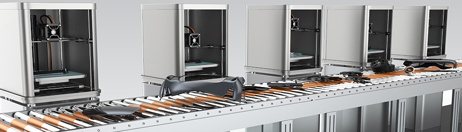

Today’s world is driven by computers. Every discipline responsible for creating or maintaining a product creates their own threads of digital data. These threads are then interwoven to create a rich tapestry of technology. Hopefully in a way that can be reused by all…
Read More.
MIL-STD-31000A
As today’s military systems are complex and have increasing lifespans. So it is critical to acquire the right type of technical data to procure and sustain them. This is where MIL-STD-31000A (which defines Technical Data Packages) comes in. It allows for both drawings and models to be put under contract.
Read More.
MIL-STD-3046
As we enter into a digital world for design, it becomes critical that the design data be managed effectively. MIL-STD-3046 is the new interim standard for the Department of Defense which provides process structure for configuration management of the data.
Read More.

Additive Manufacturing
Technical Conference October 1st
You are invited to attend this impressive
gathering of knowledge leaders concerning the latest technologies and practical
applications in Additive Manufacturing. Keynote Speaker: GE Aviation's Greg Morris,
General Manager for Additive Technologies will tell the Morris Technologies
story, including what it really takes to be a small additive
job shop
More Information.
Interim DoDI 5000.02
As we design increasingly complex systems it has become evident that the digital data used in creating them is also vital in fielding and sustainment. This is reflected in the revised Interim DoDI 5000.02 which gives guidance to acquire appropriate data with the design. Read More.
Welcome to the Model Based Enterprise (MBE) website. Our intent is to provide you with an overview of what is going on in the area of using 3D models and Technical Data Packages as a single source model throughout the lifecycle of a product...
Additive Manufacturing - Technical Conference
Oct 1st, 2015 Pittsburgh, PA
Manufacturers are invited to attend this impressive
gathering of knowledge leaders concerning
the latest technologies and practical
Keynote Speaker: GE Aviation's Greg Morris,
General Manager for Additive Technologieswill tell the Morris Technologiesstory, including what it really takes to be a small additive job shop.
Other Speakers include:
Carnegie Mellon University
| University of Pittsburgh | NASA Glenn Research Center | Alcoa | Kennametal | Concurrent Technologies Corporation | Advantech US.
Model Based Enterprise (MBE) is a digital tapestry which has been optimized around a core set of annotated product models enabling rapid, seamless, and affordable deployment of products from concept to disposal
The International Traffic in Arms Regulations (ITAR) controls products, technologies and services designated as a defense article under the U.S. Munitions List, as well as inherently military technologies and model based enterprise.
MBE Standards recently released MIL-STD-31000A defines a TDP and outlines modifications to support a lifecycle productivity transformation and American Society of Mechanical Engineers (ASME) ASME Y14.41 standard.
To determine where your company currently stands on its Model Based Enterprise (MBE) journey an assessment can be performed using the MBE Capabilities Index. As stated earlier this index is intended to define levels of MBE capability.